Rx - Delivery Order Fulfillment
Sam's Club - Walmart
Nearly half a million Sam's Club members benefit through the delivery order fulfillment, where thousands of pharmacy associates work through multiple process in receiving, validating, bagging and dispatching the orders at the stores. I was sole designer responsible for the complete discovery to end product delivery, which was executed in collaboration with 15 engineers and one product owner.
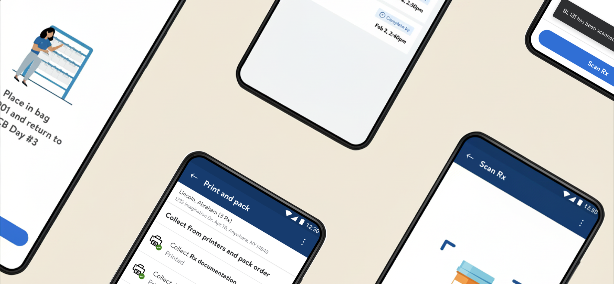
Result
The delivery fulfillment application redefined the member - associate experience across 6 pilot states.
15 → 7 min
Average associate checkout time per delivery order
800+
Orders fulfilled
Measured via internal analytics, Q4 2024, against the pre-launch Connexus baseline.
Context
Growing demand for delivery orders and operational challenges forced Sam's Club Health & Wellness team to rethink the delivery order fulfillment process through an application called RxToGo.
The RxToGo application is a newer version of the Walmart and Sam's Club legacy application, Connexus.
The Previous Platform
Connexus is a legacy web application used by pharmacies across Sam's Club and Walmart. All dispense types are processed through this platform, and with respect to delivery - GoLocal is a third-party platform for performing delivery orders through Connexus.
GoLocal is used by associates to manually schedule delivery date and time.
Through the Connexus application, a pharmacist will verify the prescription details with the doctor's office and stage for medication fill, followed by:
- A pharmacy technician will scan the prescription, and process payment on the in-store POS device by contacting the customer.
- After payment, the order is scheduled for the next available delivery time.
- On the last leg, they will print the documents and stage for delivery driver pickup.
Connexus - Existing Pharmacy Web Application
Pharmacists and technicians utilize this web application to view all the pharmacy fulfillment orders.
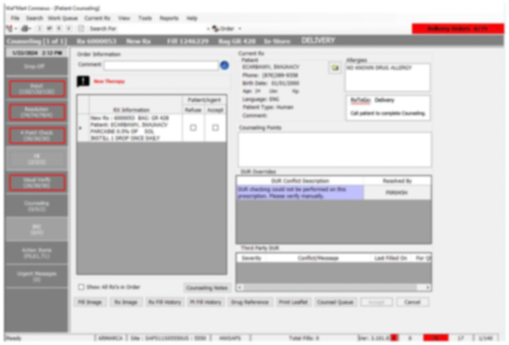
Entry point for Delivery Orders
Entry point for Delivery Orders
Image intentionally blurred; the nature of this platform is confidential. Please reach out for more details.
Problems Identified
I spent the first few weeks learning about the problem space. I analyzed the end-to-end journey of order processing by pharmacy associates on both the physical and digital ends.
Associates said the process is tedious and delays in-store customer service.
Strenuous Navigation
The Connexus portal carries a heavy cognitive load, making associates interact with multiple sections with prescription and patient details. There is no room for error when dealing with sensitive information.
Top Navbar
Main Navbar
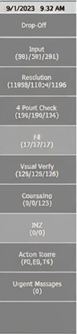
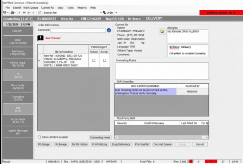
Switching Between Tabs
The Connexus-POS-GoLocal applications must be used at different times throughout an order fulfillment, while also keeping the customer on the call for order validation.
POS
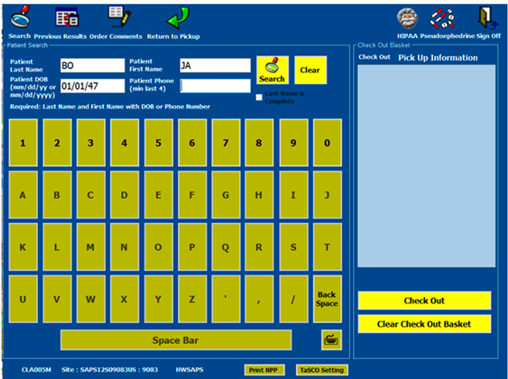
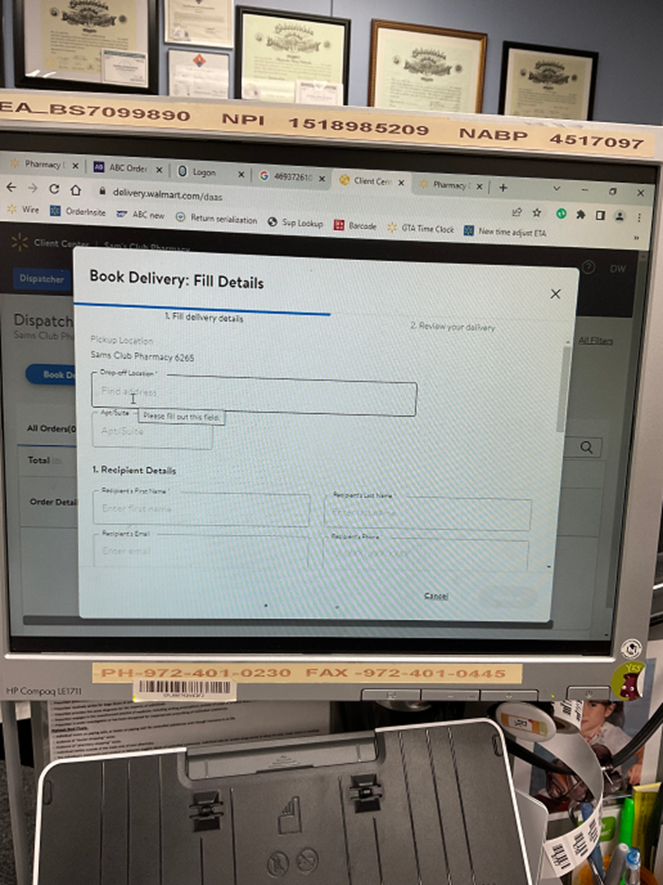
GoLocal
POS
GoLocal
Laborious Task
The overall process requires associates to move back and forth between the main work desk and the staging areas interacting with scanners, computers, printers, telephones and handheld devices.
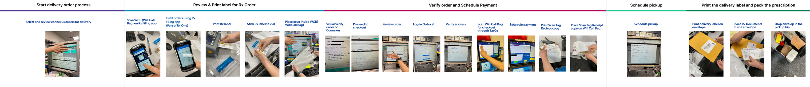
Scroll left-right to view the previous tasks
Design Approach
After identifying problems with the overall fulfillment process, I outlined three areas for a new design to innovate in:
- Transparency — Bringing all the delivery order information upfront in a single dashboard.
- Integration — Combine the delivery scheduling and checkout into a unified flow.
- Acquaintance — The tone and design system of the app are built around familiar working language.
Pharmacy associates need accessible delivery fulfillment to efficiently complete orders and spend more time with customers.
Order Maintenance Dashboard
I simplified prescription order management with a clear dashboard to view orders and delivery updates.
A linear action navbar simplifies navigating order queues and statuses. The table shows Name, Rx Count, Cost, Status, Bag, and Origination, giving associates key info to process orders, along with tech support actions easily accessible.
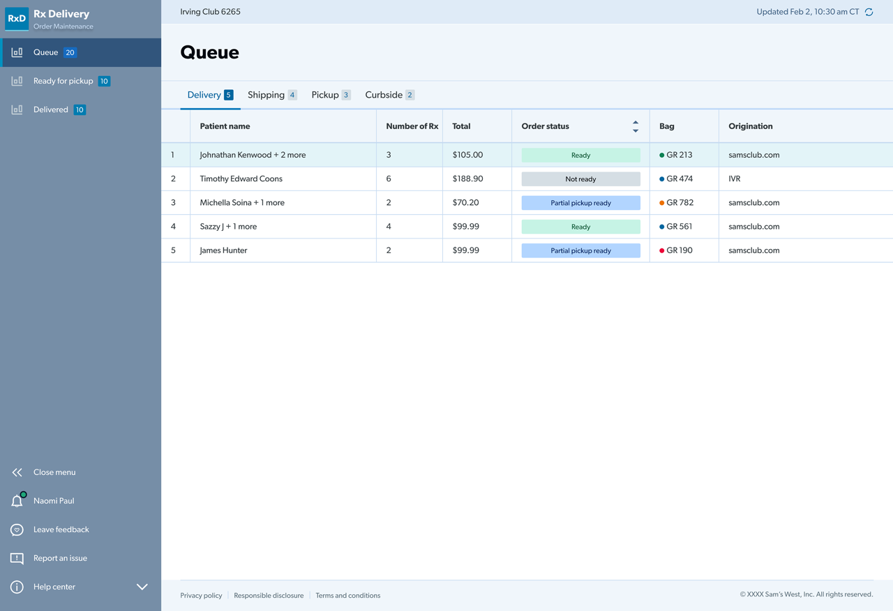
Processing Delivery Order
To streamline order processing, the previous hardware-software interactions were translated into a single linear layout for quick and easier processing.
Prescriptions are prioritized for validation by pharmacists and doctors, with updates done in one place. Color-coded bags mark prescriptions that are ready for checkout. Payments can be viewed and updated without POS in the new flow, and the schedule shows available times based on GoLocal driver data for customer communication.
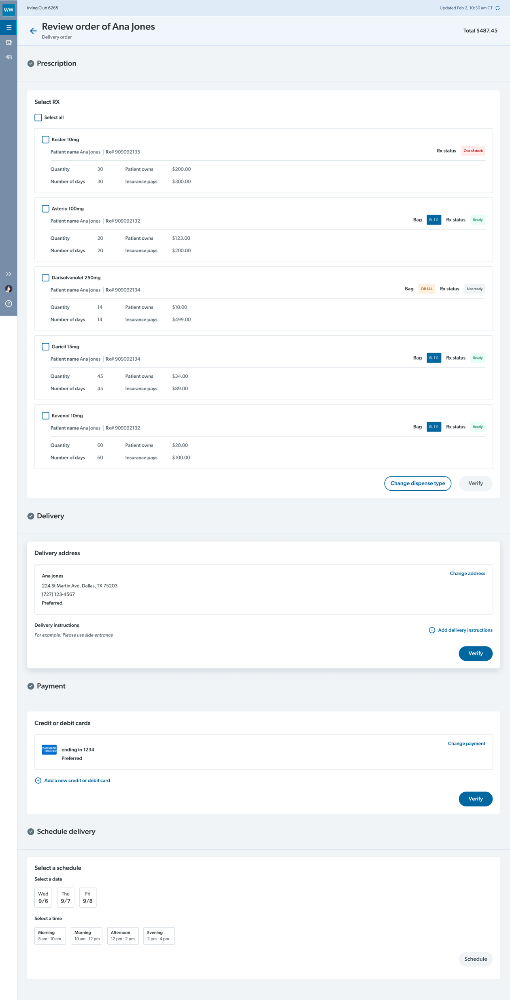
Mobile Checkout
After delivery scheduling, the prescription must be scanned for checkout. The scanning and printing tasks are performed through this mobile app that reduces associate movement and POS dependency.
Systems Thinking
A separate mobile checkout product was needed to handle the scanning and printing tasks that bypass the POS interaction and reduce associate mobility within the store.
1 · Leveraging an Existing App
A Walmart fulfillment app was redefined for order checkout to reduce engineering effort and ease user adaptation.
2 · Designing for Familiarity
Using a cohesive design system between Walmart and Sam's Club DLS, the app was designed around a unified brand guideline.
Primary Tasks
Finding an order through the app was straightforward with bag and prescription scan as primary tasks followed by printing receipts.
Order card with bag code, prescription count and time.
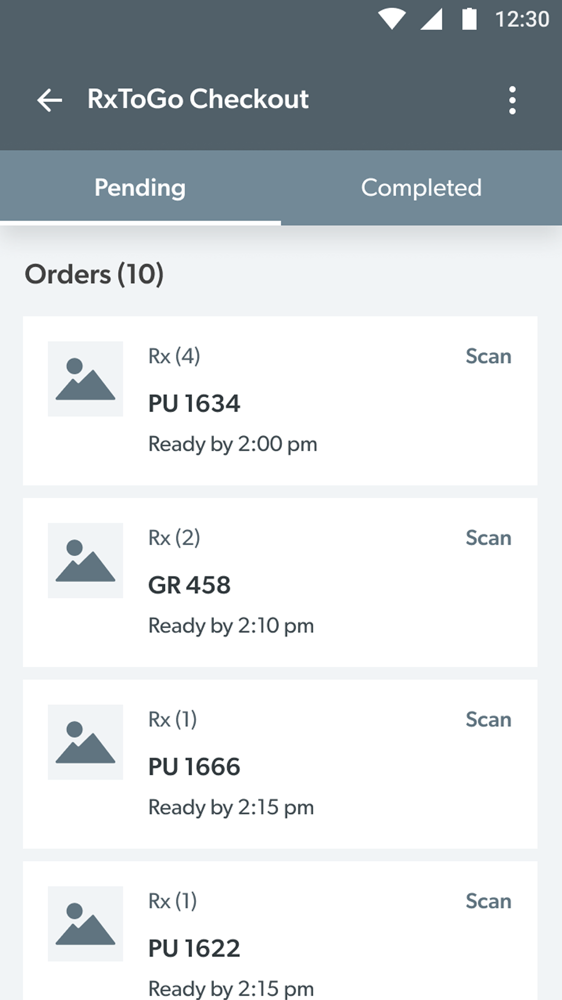
The scan action can be accessed via digital touch and physical buttons.
The mobile scanner UI follows hardware guidelines.
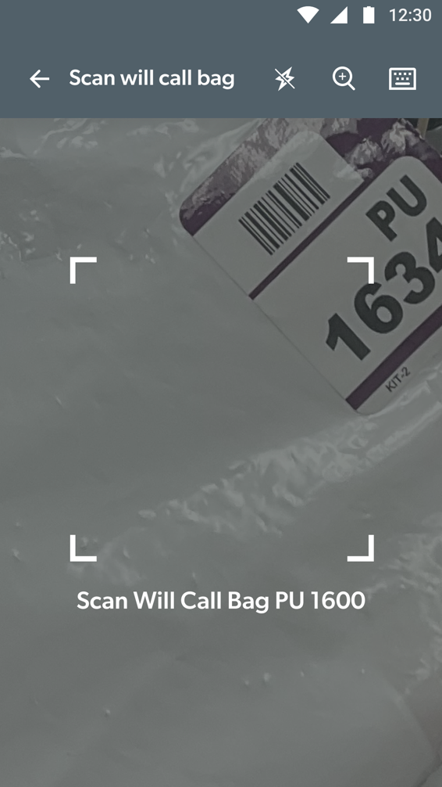
Usability Testing
I took the apps back to pharmacy associates for validation using an interactive prototype.
Associates appreciated the web portal for delivery orders, reducing clicks and dependency on GoLocal.
The mobile app is handier for checkout and helps finish tasks promptly.
Strengths
- Skimming order details for a customer is easy with a linear step-by-step process.
- Pre and post checkout details were clear.
- The checkout app had a shorter learning curve.
Opportunities
- Revisit the content flow on the web app order queue with concise, actionable items.
- Refine the checkout order list on the mobile app.
- Hardware interruption use cases required attention.
Refinements
The feedback was addressed in order of priority, which led to the following product development framework, driven by a continuous feedback loop between associates and a close partnership with engineering and product teams for quicker rollout with less design debt.
Web Order Queue Iteration
Keeping action items and order details visible reduced clutter, while fine-tuning the brand color ensured a consistent experience across both apps.
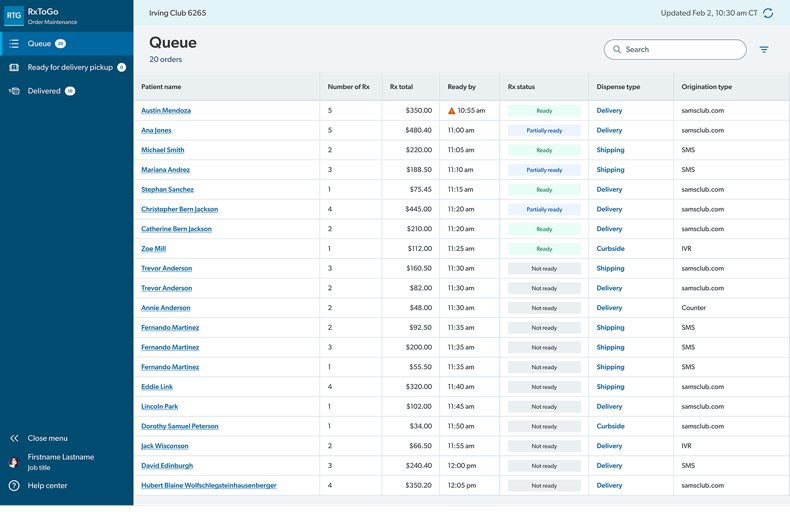
Iteration 1
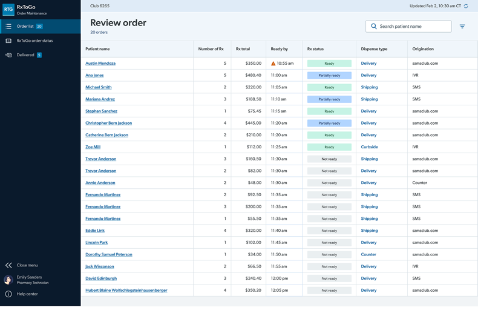
Iteration 2
Order Page Iteration
Focusing on secondary information like payments and scheduling helped associates make informed decisions.
Restructured content for Medicaid orders and patient out-of-pocket costs
Operational feedback iteration for changing payment terms
Order comment captured based on both associate and customer feedback
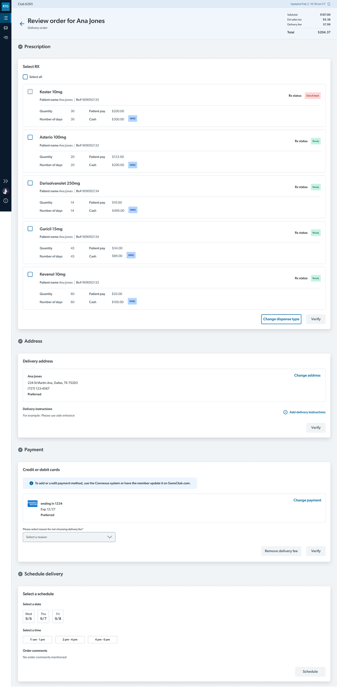
Added depth to the pricing structure
Limiting the status only by order, removing the bag code from the previous version
Mobile Checkout Queue Iteration
The card component evolved through iterations using user micro-copy validation and functional visual cues.
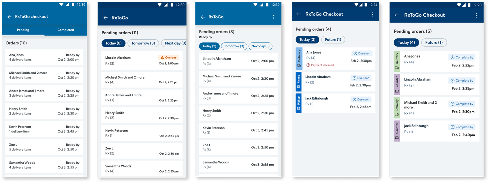
Initial Design
Iteration 1
Iteration 2
Iteration 3
Final Design
New Visual Elements
The web portal interface was designed from scratch with minimal ties to the parent DLS used internally at Sam's Club. The mobile version combines elements from both Sam's Club and Walmart.
BlueSteel DLS for Web Tools
Drawing patterns from core DLS, these components were tokenized and published officially for future web tool references.
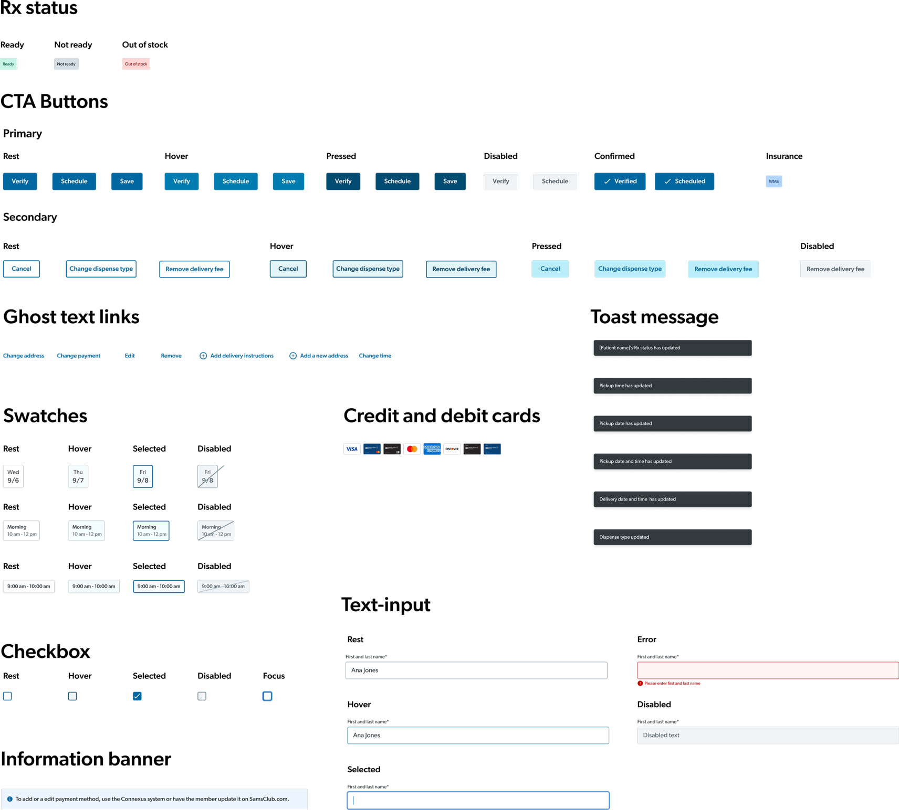
Handoff and Launch
Towards the final phases of this project, I documented the complete flow including possible edge cases based on end-user recommendations and business scenarios, which helped the engineering team develop the product.
RxToGo was rolled out across 6 pilot states that fulfilled 800+ orders.
Launch-Ready Design
The shipped product was presented in the Health & Wellness product event, a quarterly org-wide meeting that showcased new product launches across Sam's Club.
Next Steps
Collect post-launch user feedback
Although many possible use cases were captured and rolled out in production, certain use cases arise that require an operational alternative or a rethink of product strategy. As a team, we had to wait for periodic feedback collection to define next steps.
Expand further on more fulfillment options
This new delivery fulfillment process built confidence among business stakeholders and pharmacy associates, encouraging design work on other fulfillment options that can be integrated into this app.
Reflection
Design Thinking
Leading design thinking workshops with cross-functional partners enabled us to make informed design decisions for shaping the product. It helped in bringing the team into alignment on solving problems and building together against tight timelines.
Trust in Research
I set the foundation strong through research and connected the dots in the process to justify the user requirements and craft the product requirements along with the product team.
Strategic Pushbacks
Acknowledging business decisions when needed and negotiating with different stakeholders became a crucial lesson through this project. Strong communication skills helped in overcoming barriers.